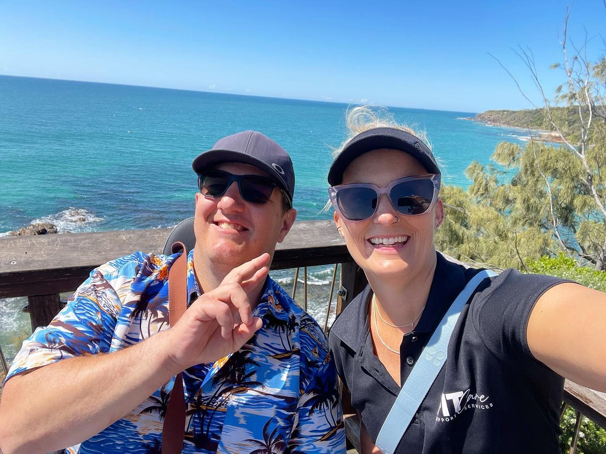

With the right support, I do it my way.
FITCare matches you with healthy, energetic support workers — 60+ locals who bring fitness, wellbeing and genuine care to every visit, from everyday supports to training to become our next Olympian.
Meet our support workers →
quality & safeguards met
most from health & fitness backgrounds
incl. Gympie & Moreton Bay
or call us right now
Tell us who you are, and we'll show you the way
Three different journeys, one friendly team. Pick yours.
I'm looking for support
See our activities, meet the team, and start with a friendly chat. No pressure, no long forms — just tell us a little about you.
Find your fit →I'm supporting someone I love
You want to know who's walking through the door. See our screening, our credentials and the people themselves — before you decide.
Why families choose FITCare →I'm a support coordinator
Registration categories, service areas and a fast referral pathway — everything you need on one page, no digging.
Go to the coordinator hub →Looking for a job you'll love instead? Careers at FITCare →
Support for every part of your day
From help at home to getting out and getting active — delivered your way, around your goals.
Daily living support
A hand with the everyday — personal care, household tasks, gardening, errands and appointments.
Learn more →Social & community participation
Group activities, outings, sport and events — building skills and friendships in your community.
Learn more →Health, fitness & wellbeing
One-on-one wellness programs, exercise physiology and personal training — find your fit and make it fun.
Learn more →Transport & travel
Getting you where you need to be — appointments, activities, work or wherever the day takes you.
Learn more →Aged care supports
Yoga, pilates, chair aerobics and water-based fitness — staying active and social at every age.
Learn more →Something on every week
Fitness, social, creative and outings — a real calendar, readable by everyone (and by Google, too). Sample cards — real schedule migrates in Phase 4
Lawn bowls & lunch
A friendly roll-up followed by lunch with the crew. All abilities welcome.
Pottery studio
Get your hands dirty and make something worth keeping.
Group fitness
Move at your own pace with a team that cheers you on.
Three easy steps to the right support worker
Say hello
Call us or answer a few quick questions online. It takes about two minutes — we reply within one business day.
Meet & greet
Sit down with your Service Coordinator — your first point of contact. Tell us what a good week looks like for you.
Get matched
We match you with support workers who fit your interests, goals and personality. Not the right fit? We'll rematch, no fuss.
Real people, and plenty of them
40+ support workers — including swim instructors, yoga teachers, footy coaches and distance runners. Sample presentation — real photos & bios from the current directory
Brooke
View profile →Bruce
View profile →Carissa
View profile →The best part isn't the gym sessions — it's that his support worker turns up with a plan and a smile, every single time.
[Name] — parent of a FITCare participant
Refer in minutes, not meetings
Everything you need at a glance — our registration categories, service areas and a direct line to intake. Start a referral online and we'll pick it up within one business day, or call us and sort it now.
Registered categories — Core
Registered categories — Capacity Building
Intake
1300 348 227 · info@fitcaresupportservices.com.au
Sunshine Coast · Gympie · Moreton Bay · North Brisbane
Questions people ask us
Is FITCare a registered NDIS provider?
Where do you provide support?
Do I need fitness goals to join?
How do I get started?
Ready when you are
Answer a few quick questions — or skip the typing and give us a call. Either way, we'll get back to you within one business day.
Support coordinators: start a referral here.
See the energy for yourself
The latest from our YouTube channel — real activities, real people, this week. Sample tiles — the live feed pulls the 4 newest videos automatically in production